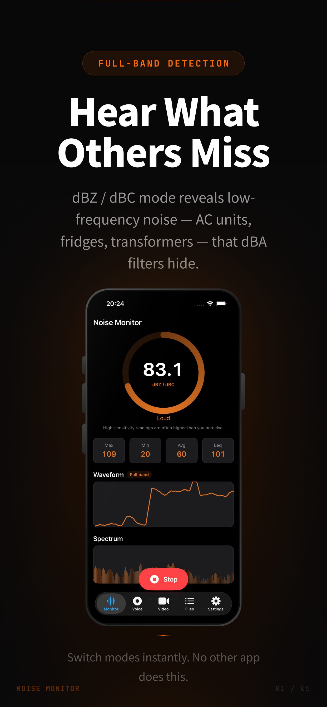
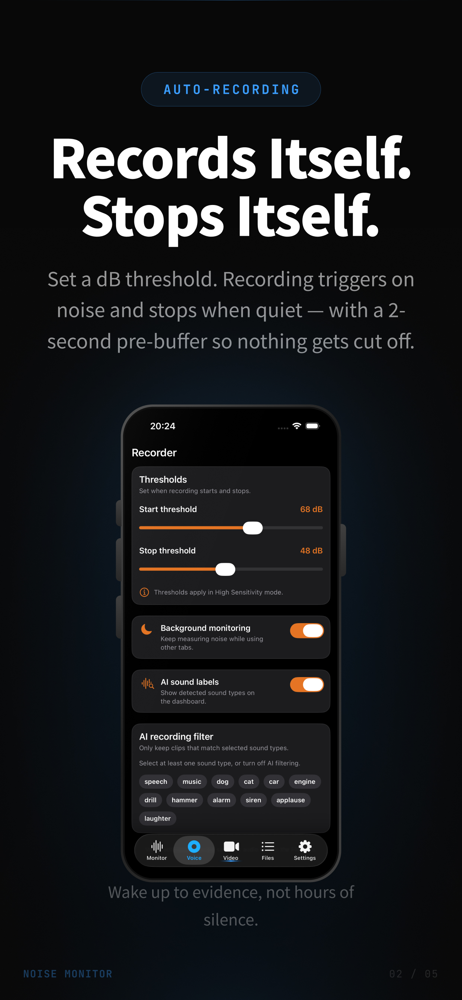
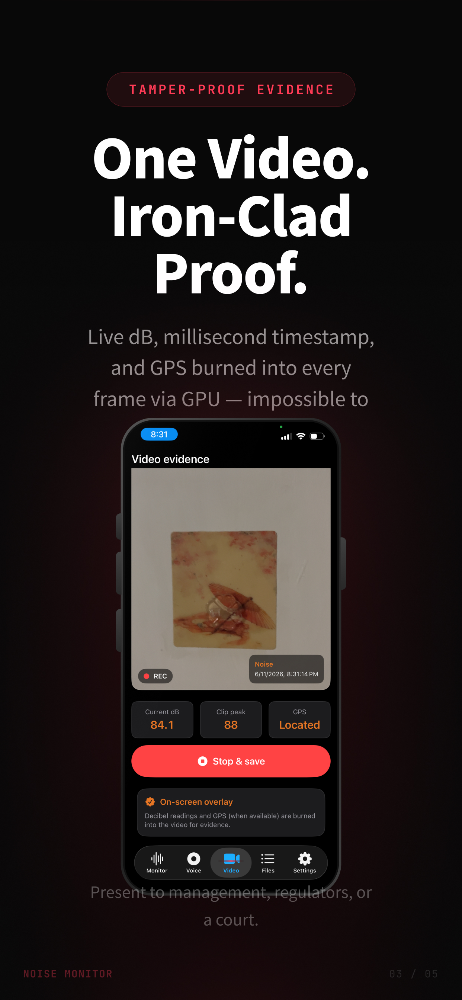
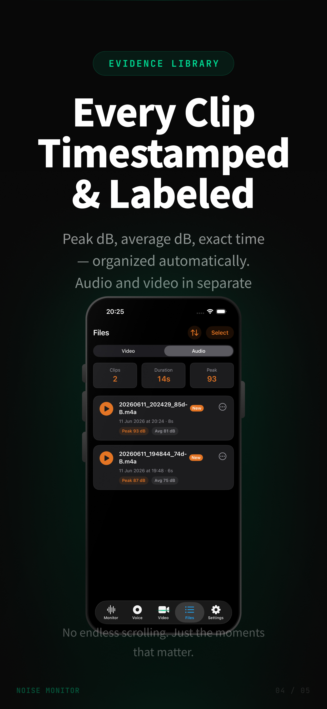
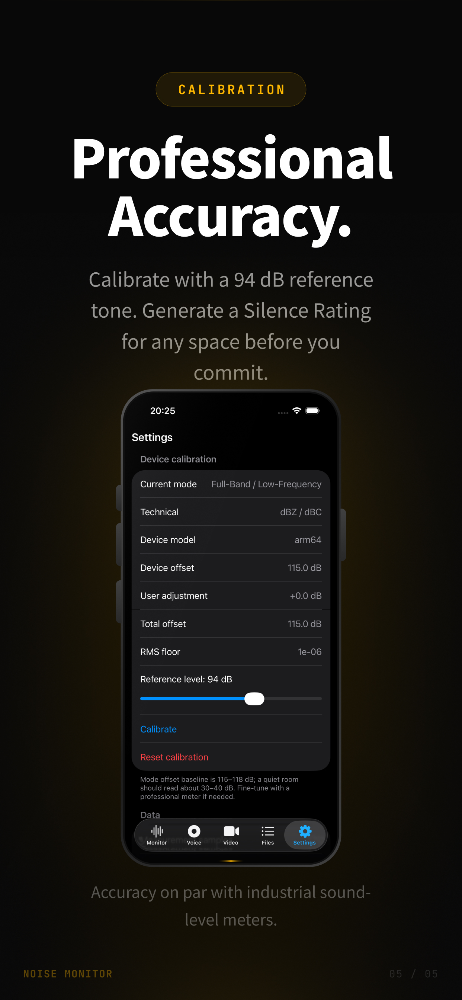

Monitor
Live dB readings, waveform, spectrum analysis, Leq, and max/min/average stats. Start and stop monitoring with one tap.
Real-time decibel monitoring, voice-activated audio capture, and video evidence with burned-in dB overlays — built for everyday noise checks and serious documentation.
App preview
Monitor, record, capture video evidence, manage clips, and calibrate — five core workflows in one app.





Swipe to browse all five screens
Features
Five focused tools — from live monitoring to exportable evidence files.
Live dB readings, waveform, spectrum analysis, Leq, and max/min/average stats. Start and stop monitoring with one tap.
Voice-activated recording when sound exceeds your start threshold. Optional AI noise classification to record only selected sound types.
Record evidence video with decibel watermark, timestamp, and GPS burned into every frame. Pinch to zoom up to 5× on the live preview.
Browse, play, share, rename, and export voice recordings and video clips. Sort by date, peak level, or name.
Switch measurement modes, A/C/Z weighting, device calibration, and background monitoring. Available in 9 languages.
Generate silence rating reports and export measurement logs as CSV for your records.
Measurement modes
Choose the mode that matches your goal — subjective hearing or full-band physical energy.
Simulates how the ear perceives sound. Best for everyday speech, TV noise, neighbor disputes, and comparing against residential noise guidelines. Readings match how loud it sounds to you.
Captures true physical sound energy — AC units, fridge compressors, pipe rumble you may not notice. Readings are often higher than standard mode. Ideal for hidden noise sources and evidence gathering.
Download
Requires iOS 18.6 or later. Microphone access required; camera and location for video evidence.
Download on the App Store